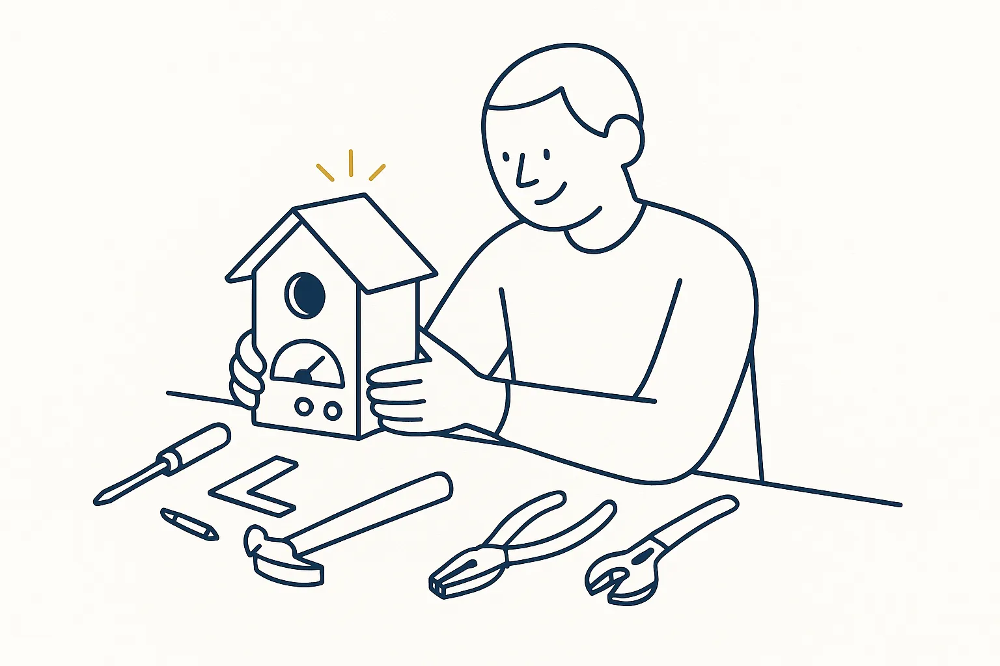
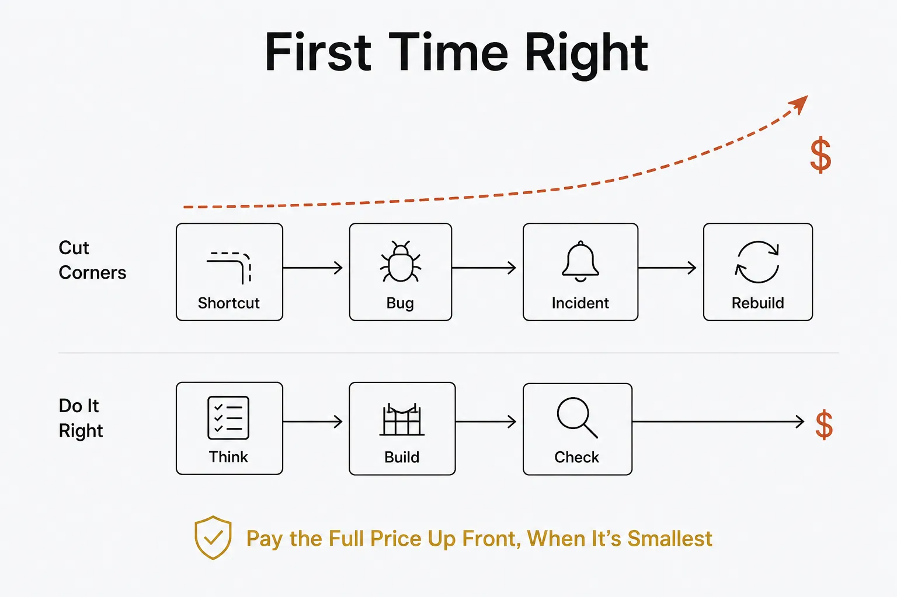
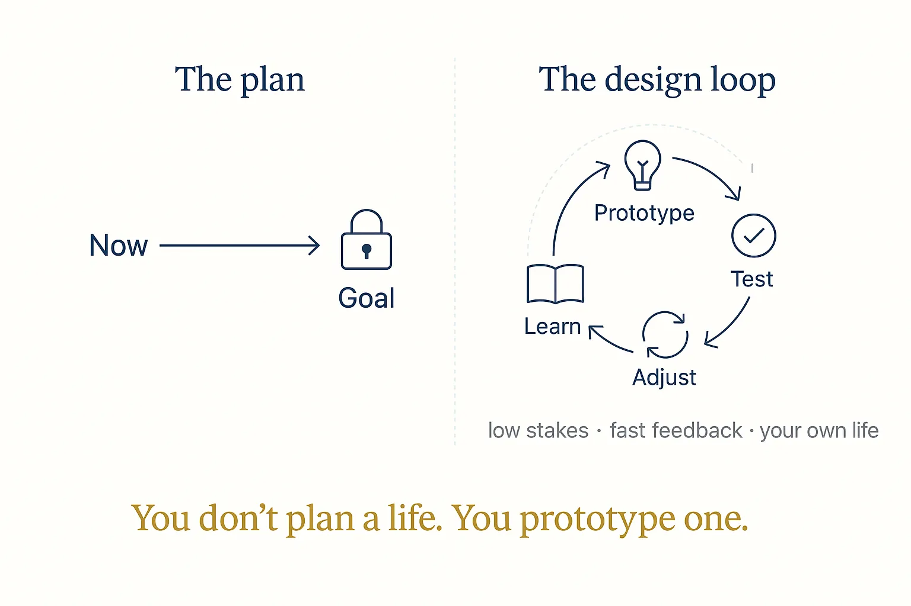
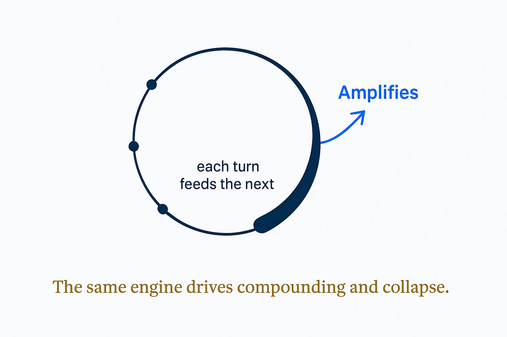
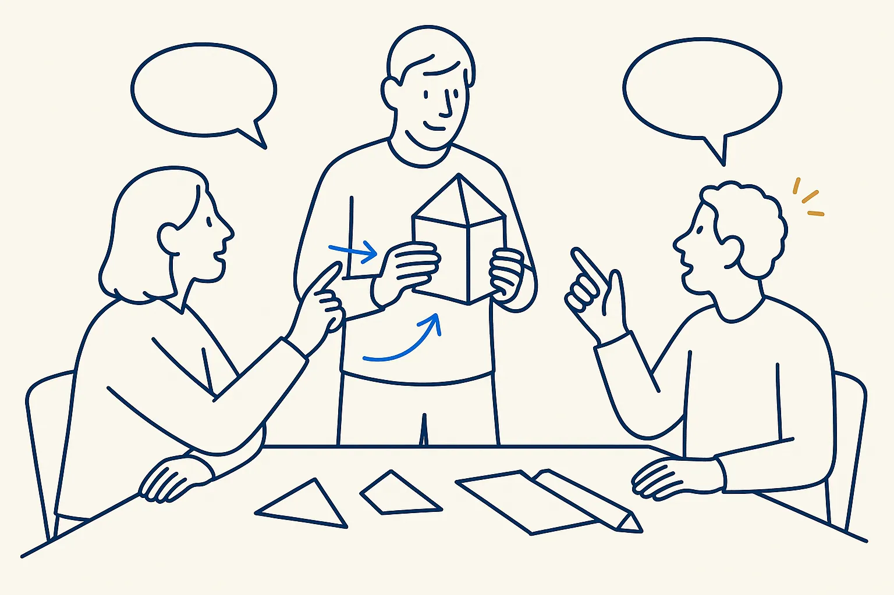
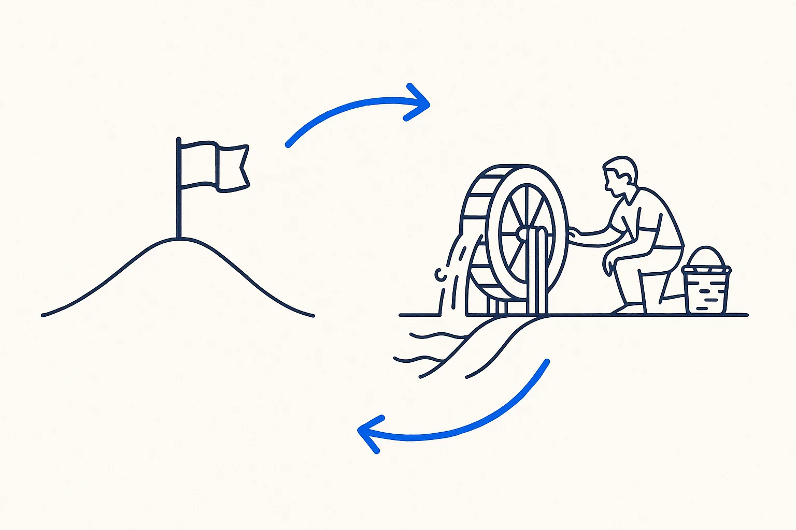

Mental models, rules and habits
Borrowed lenses and my own rules from Breakthrough Sabbatical: experiments, loops, compounding and checking the result.

Build something you did not have toJaco van der LaanThen use it, fix it, and use it again. The building is not the point; staying in the habit of making something that works is.Read more →CompoundingJaco van der LaanSmall consistent returns beat large occasional ones, given time. What matters is the number of deposits, not the size of one.Read more →
First Time RightJaco van der LaanDo it properly the first time; the shortcut you skip now is the rework you pay for later, with interest.Read more →
Life DesignJaco van der LaanTreat it like a design problem: prototype, test, iterate, instead of planning it once and hoping.Read more →
Reinforcing LoopJaco van der LaanA feedback loop where each turn amplifies the next: the engine behind both compounding growth and destructive spirals.Read more →
Say it out loud before it is finishedJaco van der LaanHalf of it is wrong and there is no other way to find out. Waiting for it to be right means finding out later, when it costs more.Read more →
Systems, not goalsJames ClearA goal is reached and then leaves you without a next move; a system keeps producing.Read more →Verify on fresh outputJaco van der LaanVerify on fresh output, not on what the script printed. Check the artefact, not the log line claiming it is there.Read more →ZettelkastenNiklas LuhmannOne idea per note, each note linked to its neighbours. The structure is what the links turn out to be.Read more →